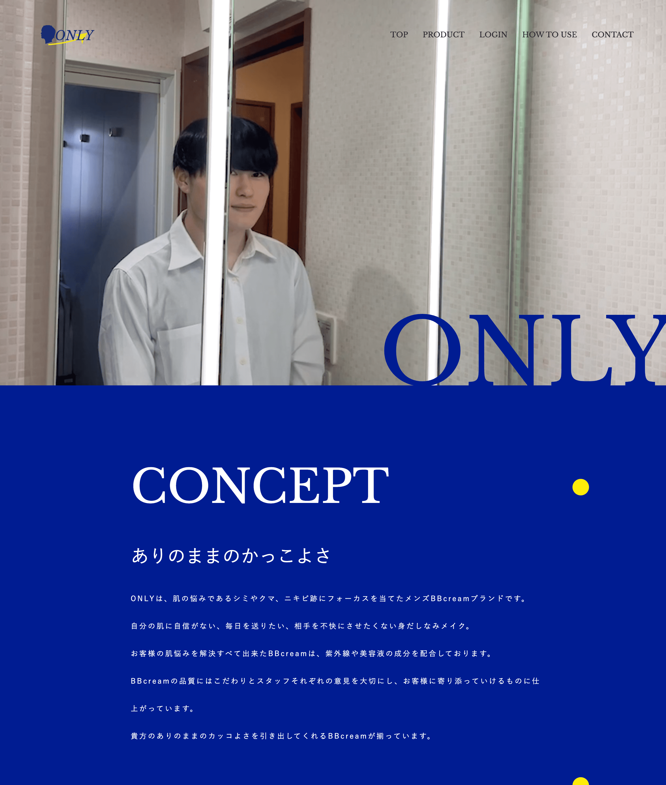

ONLY

- 制作期間
- 3ヶ月
- 人数
- 3人
- 担当
- 全て (企画、デザイン、コーディング)
- 使用技術
- HTML, CSS(SCSS), JavaScript(Swiper.js, GSAP)
- 作品概要
- メンズメイクのECサイトを作成しました。若者の肌トラブルであるシミやクマ、ニキビ跡をメンズメイクで解決できます。ターゲットは20代の新社会人です。社会人で寝不足でクマができていたり、何かしらの肌トラブルで不潔な身だしなみだと一気に印象が悪くなってしまいます。そこの身だしなみを整えるための清潔感を上げる身だしなみメイクを考えました。
- こだわり
- メンズメイク初心者でも自分に合ったBBクリームの色がわかる肌色診断テストです。診断結果からあなたに合った色がわかりそのまま購入ページまで飛べます。またいざ購入しても使い方がわからない男性が多いと思ったので、使い方を動画と画像でSTEPに分けて解説しています。